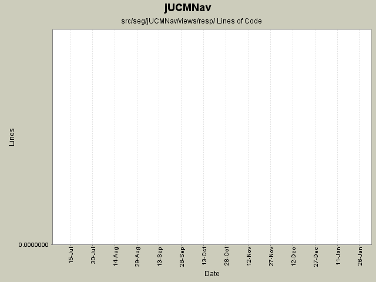

Summary Period: 2005-07-07 to 2006-01-29
[root]/src/seg/jUCMNav/views/resp

Total Lines Of Code:
0 (2006-03-31 18:01)
| Author | Changes | Lines of Code | Lines per Change |
|---|---|---|---|
| Totals | 29 (100.0%) | 0 (-) | 0.0 |
| jpdaigle | 1 (3.4%) | 0 (-) | 0.0 |
| jkealey | 10 (34.5%) | 0 (-) | 0.0 |
| jfroy | 7 (24.1%) | 0 (-) | 0.0 |
| etremblay | 11 (37.9%) | 0 (-) | 0.0 |
Merge of GRL branch with the main trunk
0 lines of code changed in:
Extracted a bunch of strings, translated language files to French.
0 lines of code changed in:
Merge grl branch with the main trunk
Major modification of the metamodel (URN_08.mdl) (Added GRL metamodel, New interfaces that define common element in GRL and UCM, Modified UCM-Map package to implement the new interfaces (some associations and attributes have been refactored using the interfaces), Map is now called UCMmap (to resolve conflict with java.util.map in the implementation), Removed Path Graph)
Modification of the code that used the metamodel.
Started modification of jUCMNav to support GRL.
0 lines of code changed in:
Fix code to support UrnEditor
0 lines of code changed in:
added headers + package.html for all files in the seg.jUCMNav.views.* package. did not clean the files
0 lines of code changed in:
Deleted useless Resp view actions.
Added a create map button in the Stub Dialog.
0 lines of code changed in:
bug 344 - localization wizard
0 lines of code changed in:
Performance improvements in Resp view + some bug fix...
0 lines of code changed in:
Resp View scrolling now work after 3h of tweaking... I hate SWT sometimes...
0 lines of code changed in:
Small bug fix. RespView now update correctly when you switch between editors and when you close them.
The view will update when you add a new map.
0 lines of code changed in:
bug 359 - had forgotten to set new maps to current mode;
fixed bugs in ET's resp view that sometimes made the app crash
fixed a few javadoc tags
0 lines of code changed in:
Selection synchronizing between resp view and the editor.
0 lines of code changed in:
JP: javadoc improvements on private-visibility methods
0 lines of code changed in:
That's what happen when you don't test enough before commiting... My reponsibility list items were not responding to name or description changes anymore since now I was listing refs instead of defs. Fixed now.
0 lines of code changed in:
fixed a few refresh problems
0 lines of code changed in:
Pretty big commit!
Refactored the composite list control to be useable with something else than the responsibility list.
The resp view will now refresh properly when you add/remove/change a responsibility in the map.
The rep view will change when you change the tab in the editor (won't change if you use the outline). Now anything can listen to know when the tab changes.
0 lines of code changed in:
Generated by StatCVS 0.2.4